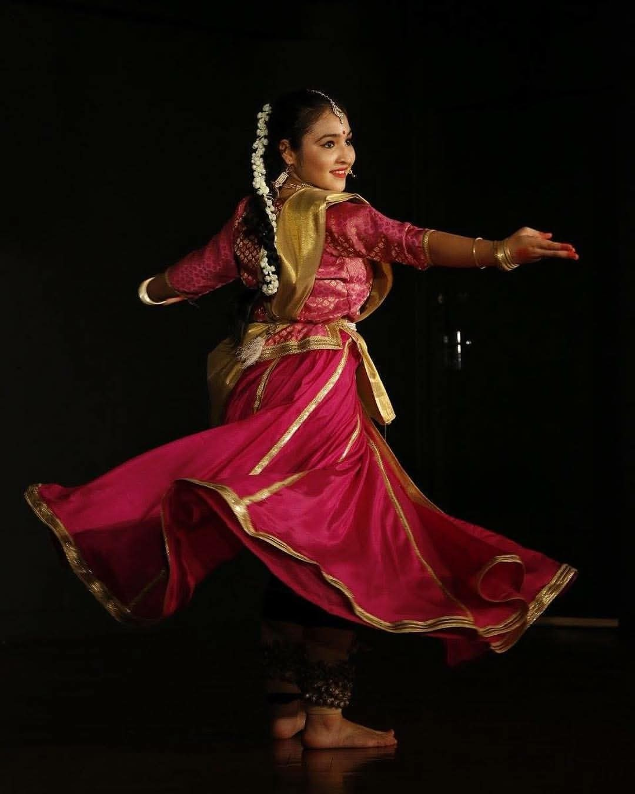

Schools & families
Help children discover traditions and the stories behind them through character, imagination and participation.
Bring the meaning behind a celebration into the moment. TokTales brings cultural stories to life through film, storytelling and live experiences.
Discuss your celebration
Help children discover traditions and the stories behind them through character, imagination and participation.
Turn a festive gathering or family day into a shared story experience that invites cultural curiosity.
Add cultural depth to a guest programme with live storytelling or screen-based festival tales.
Discuss festival story films and digital collections that audiences can revisit when the occasion returns.
The meaning behind a celebration lasts beyond the event. Develop a story experience that becomes part of how your audience discovers the tradition.
Share the occasion, cultural context, audience and setting. We will discuss the right story and format.
Let’s create your story